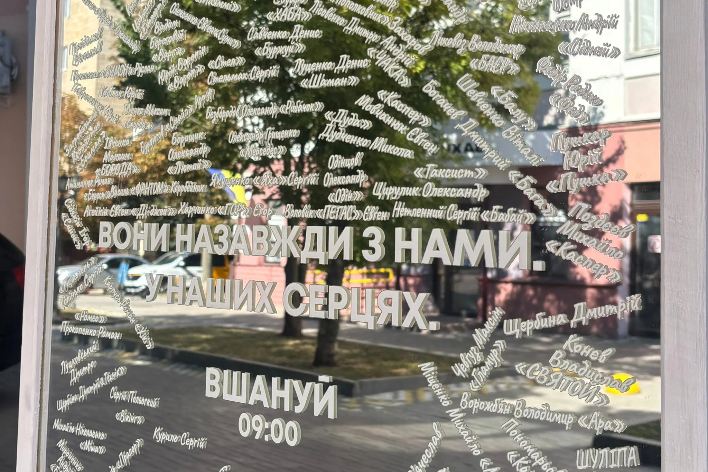

Дзеркало памʼяті
- Напрями:
- Суспільство
Дзеркало памʼяті – проєкт, реалізований командою координаторок «Вшануй» у Полтаві. Це місце, де кожен може залишити імʼя людини, яку вбила росія, щоб вона була видимою у просторі міста.

У Полтаві дзеркало розміщене у кавʼярні «Благокава», а точніше ззовні закладу, де кожен, хто проходить повз, може долучитись. Люди залишають написи на папері, а потім за місяць дзеркало доповнюють новими іменами.
Корисні матеріали
-
Дзеркало памʼяті – інструкція Як втілити проєкт.